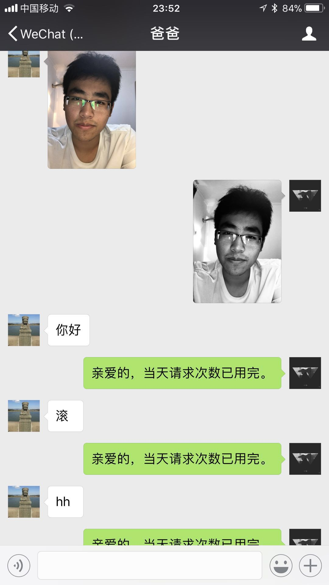

itchat robot project.py
This project is designed for automated reply of information and information processing in Wechat, the basic function I achieved is
1: auto reply from Turing robot,
2: conversion of RGB image to Single channel when receiving a image
3: auto-reply of recording and sharing
